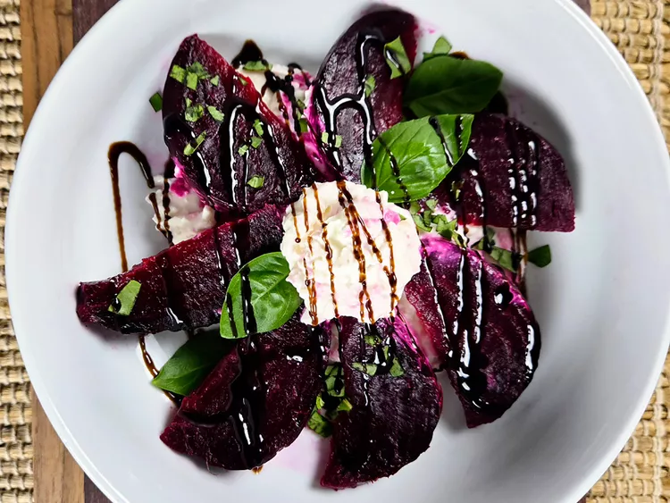

Roasted Beets and Burrata

These roasted beets and burrata combine earthy beets with creamy burrata, basil, and a drizzle of balsamic glaze, making this a perfect side to any meal.
Ingredients
- 2 beets
- 8 ounces burrata cheese
- 4 fresh basil leaves, torn
- 1 tablespoon balsamic glaze, or as needed
Steps
- Preheat the oven to 400 degrees F (200 degrees C). Line a baking sheet with parchment paper.
- Peel beets and place them whole or cut into pieces on the parchment.
- Roast beets in the preheated oven until tender when pierced with a knife, 30 to 40 minutes. Allow to cool to room temperature, about 15 minutes. Peel and slice.
- Place burrata in a shallow dish and slice open to allow the cheese to ooze out. Arrange beet slices around the burrata. Top with chopped basil and drizzle with balsamic glaze.
Home